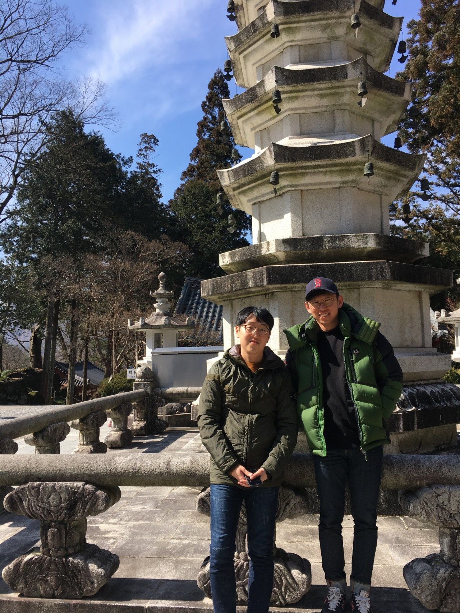
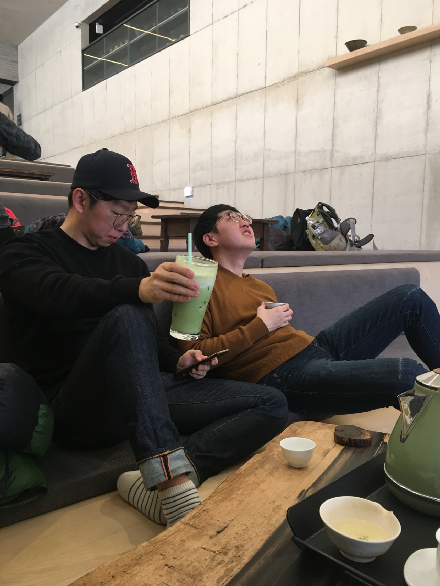

목차
인물소개
대공노에서 진행한 콘도&리조트 특가예약에 장희재가 당첨됨으로 2018년 3월 셋은 떠나게 된다.
이 여행 이후 도경한은 여자친구가 생길 때 마다 하동을 방문하였을 정도로(제 2의 고향)
하동은 상당히 매력적인 여행지였다.
이 후 도경한이 쌍계명차를 방문한 자료는 없지만 최소 3번 이상 방문하였다는게 학계의 정설이다.
 ◀ 다정해 보이는 둘  ◀ 도경한 쌍계명차 첫방문!